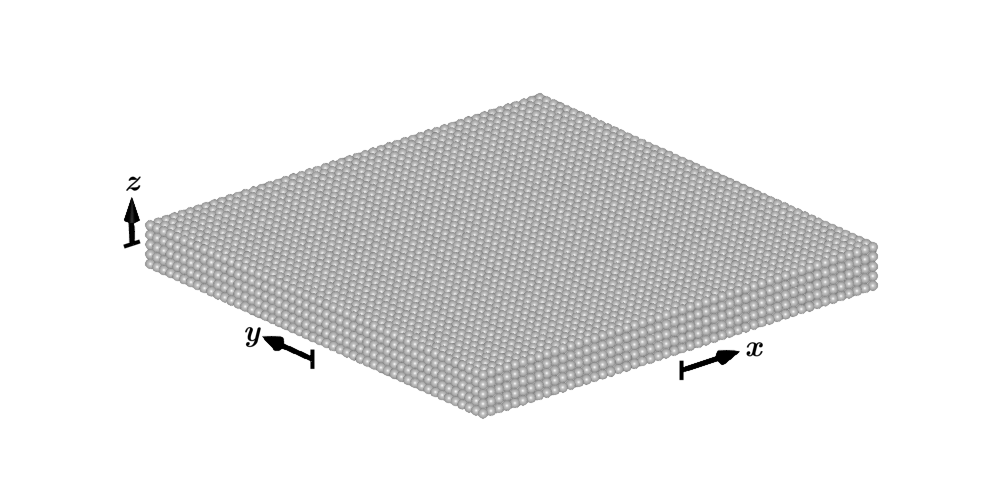
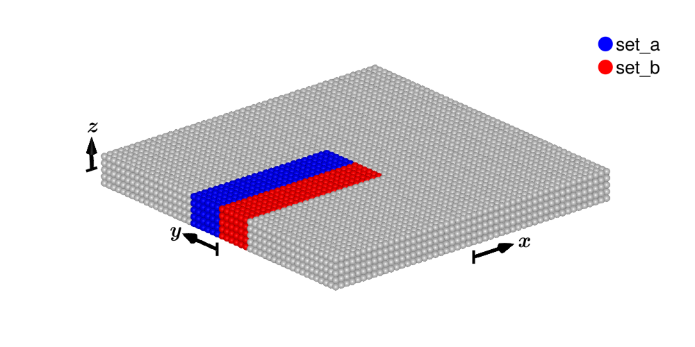
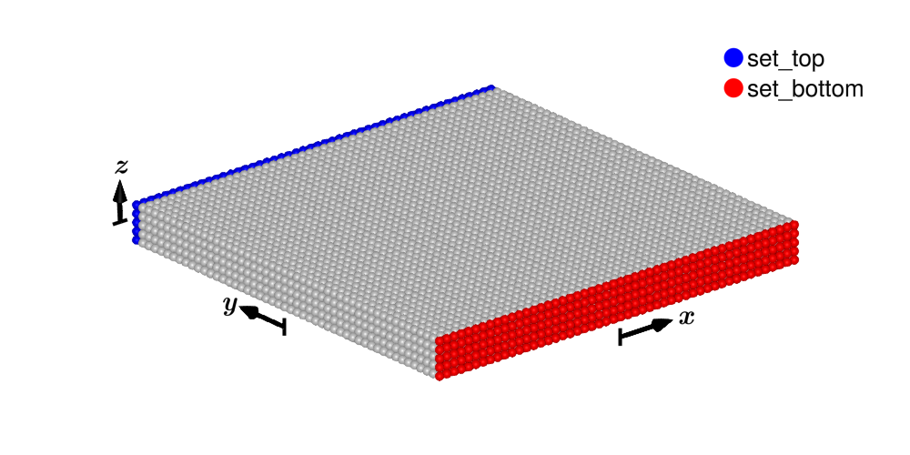
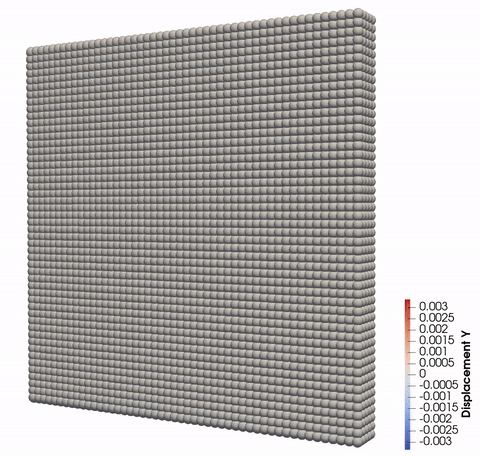
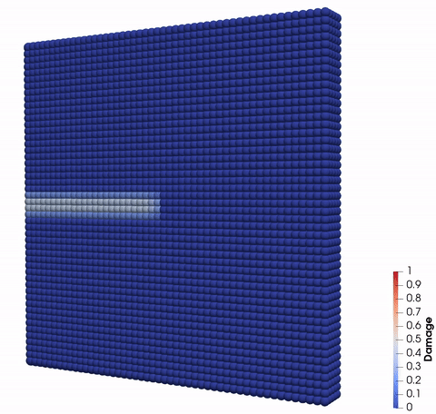

Mode I tension with predefined crack
Import the package:
using PeridynamicsSpatial Discretization
To begin, let's define our geometry. In this example, we will create a point cloud consisting of $50 \times 50 \times 5$ material points. The edge length of this block is $l = 1\,\text{mm}$, with a thickness of $\frac{1}{10}l$.
l = 1.0
Δx = l / 50
pc = PointCloud(l, l, 0.1l, Δx)12500-points PointCloud
Define a continuum-based material with
- Horizon $\delta = 3\,\Delta x$
- Density $\rho = 8e-6\,\mathrm{kg}\,\mathrm{mm}^{-3}$
- Youngs modulus $E = 210 000 \, \mathrm{MPa}$
- Poisson ratio $\nu = \frac{1}{4}$
- Griffith's parameter $G_c = 2.7 \, \mathrm{N} \, \mathrm{mm}^{-1}$
δ = 3.015Δx
mat = ContinuumBasedMaterial(horizon=δ, rho=8e-6, E=2.1e5, nu=0.25, Gc=2.7)ContinuumBasedMaterial:
δ: 0.0603
rho: 8e-06
E: 210000
nu: 0.25
G: 84000
K: 140000
C1: 6.0671e+10
C2: 0
C3: 0
Gc: 2.7
εc: 0.0133298
To add a predefined crack with length $a$, we use two point sets.
a = 0.5l
set_a = findall(p -> p[1] ≤ -l/2+a && 0 ≤ p[2] ≤ 2δ, eachcol(pc.position))
set_b = findall(p -> p[1] ≤ -l/2+a && -2δ ≤ p[2] < 0, eachcol(pc.position))
precrack = PreCrack(set_a, set_b)PreCrack:
750 points in set a
750 points in set b
Additional point sets for the bottom and the top are used for the velocity boundary condition of $\pm 20 \, \mathrm{mm} \, \mathrm{s}^{-1}$.
set_top = findall(p -> p[2] > l/2-Δx, eachcol(pc.position))
set_bottom = findall(p -> p[2] < -l/2+Δx, eachcol(pc.position));bc_bottom = VelocityBC(t -> -20, set_bottom, 2)250-points VelocityBC in y-direction (dim=2)bc_top = VelocityBC(t -> 20, set_top, 2)250-points VelocityBC in y-direction (dim=2)
We set the number of time steps for the Velocity Verlet algorithm to 2000 time steps.
vv = VelocityVerlet(2000)VelocityVerlet(2000, -1.0, 0.7)The results of our analysis should be saved in the directory "results/mode_I_tension_precrack" every 10'th time step.
jobname = "mode_I_tension_precrack"
path = joinpath("results", jobname)
!ispath(path) && mkpath(path) # create the path if it does not exist
es = ExportSettings(path, 10)ExportSettingsRun a single body analysis:
job = PDSingleBodyAnalysis(name=jobname, pc=pc, mat=mat, precracks=[precrack],
bcs=[bc_bottom,bc_top], td=vv, es=es)PDSingleBodyAnalysis{ContinuumBasedMaterial, VelocityVerlet}: mode_I_tension_precracksubmit(job)Displacement results:

Damage results:

(Visualizations made with ParaView)